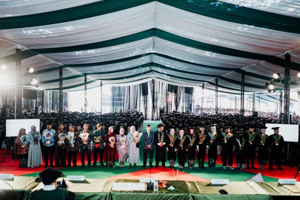

Tasikmalaya, 26 Oktober 2023 - Universitas Perjuangan Tasikmalaya (UNPER) menggelar acara wisuda ke-5 yang meriah dengan melibatkan 812 wisudawan dari berbagai fakultas dan program studi. Acara megah ini diadakan di Gedung Lapangan Utama Universitas Perjuangan Tasikmalaya dan menjadi sorotan utama di tengah-tengah masyarakat akademis setempat.
Dalam acara tersebut, peserta wisuda berasal dari 5 fakultas dari 10 program studi yang ada di UNPER, mencakup berbagai bidang ilmu pengetahuan. Keberagaman latar belakang akademik dan minat studi mencerminkan kualitas pendidikan yang diberikan oleh universitas tersebut. Prosesi wisuda ini juga menjadi momen berharga untuk para mahasiswa yang berhasil menyelesaikan pendidikan tinggi mereka di Universitas Perjuangan Tasikmalaya. Para wisudawan tampak bersemangat dan bahagia saat rektor melantik seluruh wisudawan Universitas Perjuangan Tasikmalaya dan dilanjutkan dengan penyerahan ijazah oleh para Dekan. Selanjutnya dilakukan pemberian penghargaan kepada wisudawan terbaik dari masing-masing fakultas sebagai bentuk apresiasi atas dedikasi dan prestasi yang telah ditunjukkan selama masa studi mereka.